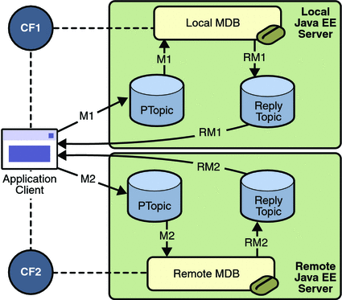

An Application Example That Deploys a Message-Driven Bean on Two Servers
This section, like the preceding one, explains how to write, compile, package, deploy, and run a pair of Java EE modules that use the JMS API and run on two Java EE servers. The modules are slightly more complex than the ones in the first example.
The modules use the following components:
An application client that is deployed on the local server. It uses two connection factories, one ordinary one and one that is configured to communicate with the remote server, to create two publishers and two subscribers and to publish and to consume messages.
A message-driven bean that is deployed twice: once on the local server, and once on the remote one. It processes the messages and sends replies.
In this section, the term local server means the server on which both the application client and the message-driven bean are deployed (earth in the preceding example). The term remote server means the server on which only the message-driven bean is deployed (jupiter in the preceding example).
You will find the source files for this section in tut-install/examples/jms/sendremote/. Path names in this section are relative to this directory.
Overview of the sendremote Example Modules
This pair of modules is somewhat similar to the modules in An Application Example That Consumes Messages from a Remote Server in that the only components are a client and a message-driven bean. However, the modules here use these components in more complex ways. One module consists of the application client. The other module contains only the message-driven bean and is deployed twice, once on each server.
The basic steps of the modules are as follows.
You start two Java EE servers, one on each system.
On the local server (earth), you create two connection factories: one local and one that communicates with the remote server (jupiter). On the remote server, you create a connection factory that has the same name as the one that communicates with the remote server.
The application client looks up the two connection factories (the local one and the one that communicates with the remote server) to create two connections, sessions, publishers, and subscribers. The subscribers use a message listener.
Each publisher publishes five messages.
Each of the local and the remote message-driven beans receives five messages and sends replies.
The client’s message listener consumes the replies.
Figure 31-6 illustrates the structure of this application. M1 represents the first message sent using the local connection factory, and RM1 represents the first reply message sent by the local MDB. M2 represents the first message sent using the remote connection factory, and RM2 represents the first reply message sent by the remote MDB.
Figure 31-6 A Java EE Application That Sends Messages to Two Servers
Writing the Module Components for the sendremote Example
Writing the components of the modules involves coding the application client and the message-driven bean.
Coding the Application Client: MultiAppServerClient.java
The application client class, multiclient/src/java/MultiAppServerClient.java, does the following.
It injects resources for two connection factories and a topic.
For each connection factory, it creates a connection, a publisher session, a publisher, a subscriber session, a subscriber, and a temporary topic for replies.
Each subscriber sets its message listener, ReplyListener, and starts the connection.
Each publisher publishes five messages and creates a list of the messages the listener should expect.
When each reply arrives, the message listener displays its contents and removes it from the list of expected messages.
When all the messages have arrived, the client exits.
Coding the Message-Driven Bean: ReplyMsgBean.java
The message-driven bean class, replybean/src/ReplyMsgBean.java, does the following:
Uses the @MessageDriven annotation:
@MessageDriven(mappedName = "jms/Topic")
Injects resources for the MessageDrivenContext and for a connection factory. It does not need a destination resource because it uses the value of the incoming message’s JMSReplyTo header as the destination.
Uses a @PostConstruct callback method to create the connection, and a @PreDestroy callback method to close the connection.
The onMessage method of the message-driven bean class does the following:
Casts the incoming message to a TextMessage and displays the text
Creates a connection, a session, and a publisher for the reply message
Publishes the message to the reply topic
Closes the connection
On both servers, the bean will consume messages from the topic jms/Topic.
Creating Resources for the sendremote Example
This example uses the connection factory named jms/ConnectionFactory and the topic named jms/Topic. These objects must exist on both the local and the remote servers.
This example uses an additional connection factory, jms/JupiterConnectionFactory, which communicates with the remote system; you created it in To Create Administered Objects for Multiple Systems. This connection factory must exist on the local server.
The build.xml file for the multiclient module contains targets that you can use to create these resources if you deleted them previously.
To Use Two Application Servers for the sendremote Example
If you are using NetBeans IDE, you need to add the remote server in order to deploy the message-driven bean there. To do so, follow these steps.
- In NetBeans IDE, click the Runtime tab.
- Right-click the Servers node and choose Add Server. In the Add Server Instance
dialog, follow these steps:
- Select GlassFish v3 (the default) from the Server list.
- In the Name field, specify a name slightly different from that of the local server, such as GlassFish v3 (2).
- Click Next.
- For the Server Location, you can either browse to the location of the GlassFish Server on the remote system or, if that location is not visible from the local system, use the default location on the local system.
- Click Next.
- Select the Register Remote Domain radio button.
- In the Host Name field, type the name of the remote system.
- Click Finish.
Next Steps
Before you can run the example, you must change the default name of the JMS host on jupiter, as described in To Change the Default Host Name Using the Administration Console. If you have already performed this task, you do not have to repeat it.
To Build, Package, Deploy, and Run the sendremote Modules Using NetBeans IDE
To build, package, deploy, and run the modules using NetBeans IDE, follow these steps.
- To build the replybean mocule, follow these steps:
- In NetBeans IDE, choose Open Project from the File menu.
- In the Open Project dialog, navigate to tut-install/examples/jms/sendremote/.
- Select the replybean folder.
- Select the Open as Main Project check box.
- Click Open Project.
- Right-click the replybean project and choose Build.
This command creates a JAR file that contains the bean class file.
- To build the multiclient module, follow these steps:
- Choose Open Project from the File menu.
- Select the multiclient folder.
- Select the Open as Main Project check box.
- Click Open Project.
- Right-click the multiclient project and choose Build.
This command creates a JAR file that contains the client class file and a manifest file.
- To deploy the multiclient module on the local server, follow these steps:
- Right-click the multiclient project and choose Properties.
- Select Run from the Categories tree.
- From the Server list, select GlassFish v3 Domain (the local server).
- Click OK.
- Right-click the multiclient project and choose Deploy.
You can use the Services tab to verify that multiclient is deployed as an App Client Module on the local server.
- To deploy the replybean module on the local and remote servers, follow these
steps:
- Right-click the replybean project and choose Properties.
- Select Run from the Categories tree.
- From the Server list, select GlassFish v3 Domain (the local server).
- Click OK.
- Right-click the replybean project and choose Deploy.
- Right-click the replybean project again and choose Properties.
- Select Run from the Categories tree.
- From the Server list, select GlassFish v3 (2) (the remote server).
- Click OK.
- Right-click the replybean project and choose Deploy.
You can use the Services tab to verify that replybean is deployed as an EJB Module on both servers.
- To run the application client, right-click the multiclient project and choose Run Project.
This command returns a JAR file named multiclientClient.jar and then executes it.
On the local system, the output of the appclient command looks something like this:
running application client container. Sent message: text: id=1 to local app server Sent message: text: id=2 to remote app server ReplyListener: Received message: id=1, text=ReplyMsgBean processed message: text: id=1 to local app server Sent message: text: id=3 to local app server ReplyListener: Received message: id=3, text=ReplyMsgBean processed message: text: id=3 to local app server ReplyListener: Received message: id=2, text=ReplyMsgBean processed message: text: id=2 to remote app server Sent message: text: id=4 to remote app server ReplyListener: Received message: id=4, text=ReplyMsgBean processed message: text: id=4 to remote app server Sent message: text: id=5 to local app server ReplyListener: Received message: id=5, text=ReplyMsgBean processed message: text: id=5 to local app server Sent message: text: id=6 to remote app server ReplyListener: Received message: id=6, text=ReplyMsgBean processed message: text: id=6 to remote app server Sent message: text: id=7 to local app server ReplyListener: Received message: id=7, text=ReplyMsgBean processed message: text: id=7 to local app server Sent message: text: id=8 to remote app server ReplyListener: Received message: id=8, text=ReplyMsgBean processed message: text: id=8 to remote app server Sent message: text: id=9 to local app server ReplyListener: Received message: id=9, text=ReplyMsgBean processed message: text: id=9 to local app server Sent message: text: id=10 to remote app server ReplyListener: Received message: id=10, text=ReplyMsgBean processed message: text: id=10 to remote app server Waiting for 0 message(s) from local app server Waiting for 0 message(s) from remote app server Finished Closing connection 1 Closing connection 2
On the local system, where the message-driven bean receives the odd-numbered messages, the output in the server log looks like this (wrapped in logging information):
ReplyMsgBean: Received message: text: id=1 to local app server ReplyMsgBean: Received message: text: id=3 to local app server ReplyMsgBean: Received message: text: id=5 to local app server ReplyMsgBean: Received message: text: id=7 to local app server ReplyMsgBean: Received message: text: id=9 to local app server
On the remote system, where the bean receives the even-numbered messages, the output in the server log looks like this (wrapped in logging information):
ReplyMsgBean: Received message: text: id=2 to remote app server ReplyMsgBean: Received message: text: id=4 to remote app server ReplyMsgBean: Received message: text: id=6 to remote app server ReplyMsgBean: Received message: text: id=8 to remote app server ReplyMsgBean: Received message: text: id=10 to remote app server
- To undeploy the modules after you finish running the client, follow these steps:
- Click the Services tab.
- Expand the Servers node.
- Expand the GlassFish v3 Domain node (the local system).
- Expand or refresh the Applications node.
- Right-click replybean and choose Undeploy.
- Right-click multiclient and choose Undeploy.
- Expand the GlassFish v3 (2) node (the remote system).
- Expand or refresh the Applications node.
- Right-click replybean and choose Undeploy.
- To remove the generated files, follow these steps:
- Right-click the replybean project and choose Clean.
- Right-click the multiclient project and choose Clean.
To Build, Package, Deploy, and Run the sendremote Modules Using Ant
To build, package, deploy, and run the sendremote example using Ant, follow these steps.
- To package the modules, follow these steps:
- Go to the following directory:
tut-install/examples/jms/sendremote/multiclient/
- Type the following command:
ant
This command creates a JAR file that contains the client class file and a manifest file.
- Change to the directory replybean:
cd ../replybean
- Type the following command:
ant
This command creates a JAR file that contains the bean class file.
- Go to the following directory:
- To deploy the replybean module on the local and remote servers, follow these
steps:
- Verify that you are still in the directory replybean.
- Type the following command:
ant deploy
Ignore the message that states that the application is deployed at a URL.
- Type the following command:
ant deploy-remote -Dsys=remote-system-name
Replace remote-system-name with the actual name of the remote system.
- To deploy and run the client, follow these steps:
- Change to the directory multiclient:
cd ../multiclient
- Type the following command:
ant run
On the local system, the output looks something like this:
running application client container. Sent message: text: id=1 to local app server Sent message: text: id=2 to remote app server ReplyListener: Received message: id=1, text=ReplyMsgBean processed message: text: id=1 to local app server Sent message: text: id=3 to local app server ReplyListener: Received message: id=3, text=ReplyMsgBean processed message: text: id=3 to local app server ReplyListener: Received message: id=2, text=ReplyMsgBean processed message: text: id=2 to remote app server Sent message: text: id=4 to remote app server ReplyListener: Received message: id=4, text=ReplyMsgBean processed message: text: id=4 to remote app server Sent message: text: id=5 to local app server ReplyListener: Received message: id=5, text=ReplyMsgBean processed message: text: id=5 to local app server Sent message: text: id=6 to remote app server ReplyListener: Received message: id=6, text=ReplyMsgBean processed message: text: id=6 to remote app server Sent message: text: id=7 to local app server ReplyListener: Received message: id=7, text=ReplyMsgBean processed message: text: id=7 to local app server Sent message: text: id=8 to remote app server ReplyListener: Received message: id=8, text=ReplyMsgBean processed message: text: id=8 to remote app server Sent message: text: id=9 to local app server ReplyListener: Received message: id=9, text=ReplyMsgBean processed message: text: id=9 to local app server Sent message: text: id=10 to remote app server ReplyListener: Received message: id=10, text=ReplyMsgBean processed message: text: id=10 to remote app server Waiting for 0 message(s) from local app server Waiting for 0 message(s) from remote app server Finished Closing connection 1 Closing connection 2
On the local system, where the message-driven bean receives the odd-numbered messages, the output in the server log looks like this (wrapped in logging information):
ReplyMsgBean: Received message: text: id=1 to local app server ReplyMsgBean: Received message: text: id=3 to local app server ReplyMsgBean: Received message: text: id=5 to local app server ReplyMsgBean: Received message: text: id=7 to local app server ReplyMsgBean: Received message: text: id=9 to local app server
On the remote system, where the bean receives the even-numbered messages, the output in the server log looks like this (wrapped in logging information):
ReplyMsgBean: Received message: text: id=2 to remote app server ReplyMsgBean: Received message: text: id=4 to remote app server ReplyMsgBean: Received message: text: id=6 to remote app server ReplyMsgBean: Received message: text: id=8 to remote app server ReplyMsgBean: Received message: text: id=10 to remote app server
- Change to the directory multiclient:
- To undeploy the multiclient module, follow these steps:
- Verify that you are still in the directory multiclient.
- Type the following command:
ant undeploy
- To undeploy the replybean module, follow these steps:
- Change to the directory replybean:
cd ../replybean
- Type the following command:
ant undeploy
- Type the following command:
ant undeploy-remote -Dsys=remote-system-name
Replace remote-system-name with the actual name of the remote system.
- Change to the directory replybean:
- To remove the generated files, use the following command in both the replybean
and multiclient directories:
ant clean